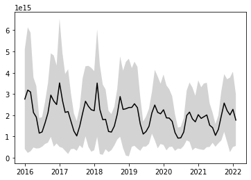

import concurrent.futures
import datetime as dt
from ipyleaflet import basemaps, Map, GeoJSON
import json
import requests as re
import matplotlib.pyplot as plt
import pprint
import time
STAC_ENDPOINT_URL = "https://staging-stac.delta-backend.xyz"
RASTER_ENDPOINT_URL = "https://staging-raster.delta-backend.xyz"Monthly OMI NO2 time series using STAC API statistics endpoints
This notebook demonstrates how to generate a timeseries using STAC API statistics endpoints.
- Author: Leo Thomas
- Lasted Updated Date: May 13, 2022
Discover NO2 data using the STAC endpoint
re.get(f"{STAC_ENDPOINT_URL}/collections/no2-monthly").json(){'id': 'no2-monthly',
'type': 'Collection',
'links': [{'rel': 'items',
'type': 'application/geo+json',
'href': 'https://staging-stac.delta-backend.xyz/collections/no2-monthly/items'},
{'rel': 'parent',
'type': 'application/json',
'href': 'https://staging-stac.delta-backend.xyz/'},
{'rel': 'root',
'type': 'application/json',
'href': 'https://staging-stac.delta-backend.xyz/'},
{'rel': 'self',
'type': 'application/json',
'href': 'https://staging-stac.delta-backend.xyz/collections/no2-monthly'}],
'title': 'NO₂ Monthly',
'extent': {'spatial': {'bbox': [[-180, -90, 180, 90]]},
'temporal': {'interval': [['2016-01-01T00:00:00Z',
'2022-01-01T00:00:00Z']]}},
'license': 'MIT',
'summaries': {'datetime': ['2016-01-01T00:00:00Z', '2022-02-01T00:00:00Z'],
'cog_default': {'max': 50064805976866816, 'min': -6618294421291008}},
'description': 'Darker colors indicate higher nitrogen dioxide (NO₂) levels and more activity. Lighter colors indicate lower levels of NO₂ and less activity. Missing pixels indicate areas of no data most likely associated with cloud cover or snow.',
'item_assets': {'cog_default': {'type': 'image/tiff; application=geotiff; profile=cloud-optimized',
'roles': ['data', 'layer'],
'title': 'Default COG Layer',
'description': 'Cloud optimized default layer to display on map'}},
'stac_version': '1.0.0',
'stac_extensions': ['https://stac-extensions.github.io/item-assets/v1.0.0/schema.json'],
'dashboard:is_periodic': True,
'dashboard:time_density': 'month'}Describe the periodic nature of the data
pprint.pprint({
k:v for k,v in re.get(f"{STAC_ENDPOINT_URL}/collections/no2-monthly").json().items()
if k in ["dashboard:is_periodic", "dashboard:time_density", "summaries"]
}){'dashboard:is_periodic': True,
'dashboard:time_density': 'month',
'summaries': {'cog_default': {'max': 50064805976866816,
'min': -6618294421291008},
'datetime': ['2016-01-01T00:00:00Z', '2022-02-01T00:00:00Z']}}Load and inspect one of the NO2 monthly STAC items
This step is just for demonstration, to inspect what an item looks like.
items = re.get(f"{STAC_ENDPOINT_URL}/collections/no2-monthly/items?limit=100").json()["features"]
items[0]{'id': 'OMI_trno2_0.10x0.10_202202_Col3_V4-no2-monthly',
'bbox': [-180.0, -90.0, 180.0, 90.0],
'type': 'Feature',
'links': [{'rel': 'collection',
'type': 'application/json',
'href': 'https://staging-stac.delta-backend.xyz/collections/no2-monthly'},
{'rel': 'parent',
'type': 'application/json',
'href': 'https://staging-stac.delta-backend.xyz/collections/no2-monthly'},
{'rel': 'root',
'type': 'application/json',
'href': 'https://staging-stac.delta-backend.xyz/'},
{'rel': 'self',
'type': 'application/geo+json',
'href': 'https://staging-stac.delta-backend.xyz/collections/no2-monthly/items/OMI_trno2_0.10x0.10_202202_Col3_V4-no2-monthly'}],
'assets': {'cog_default': {'href': 's3://covid-eo-data/OMNO2d_HRM/OMI_trno2_0.10x0.10_202202_Col3_V4.nc.tif',
'type': 'image/tiff; application=geotiff; profile=cloud-optimized',
'roles': ['data', 'layer'],
'raster:bands': [{'scale': 1.0,
'nodata': 'inf',
'offset': 0.0,
'sampling': 'area',
'data_type': 'float32',
'histogram': {'max': 27294749094313984,
'min': -2361326311571456.0,
'count': 11,
'buckets': [405729, 55726, 2526, 676, 253, 70, 9, 5, 6, 2]},
'statistics': {'mean': 349305160444321.25,
'stddev': 685701028136779.2,
'maximum': 27294749094313984,
'minimum': -2361326311571456.0,
'valid_percent': 88.69209289550781}}]}},
'geometry': {'type': 'Polygon',
'coordinates': [[[-180.0, 90.0],
[-180.0, -90.0],
[180.0, -90.0],
[180.0, 90.0],
[-180.0, 90.0]]]},
'collection': 'no2-monthly',
'properties': {'datetime': '2022-02-01T00:00:00Z',
'proj:bbox': [-180.0, -90.0, 180.0, 90.0],
'proj:epsg': 4326,
'proj:shape': [1800, 3600],
'proj:geometry': {'type': 'Polygon',
'coordinates': [[[-180.0, 90.0],
[-180.0, -90.0],
[180.0, -90.0],
[180.0, 90.0],
[-180.0, 90.0]]]},
'proj:transform': [0.1, 0.0, -180.0, 0.0, -0.1, 90.0, 0.0, 0.0, 1.0]},
'stac_version': '1.0.0',
'stac_extensions': ['https://stac-extensions.github.io/projection/v1.0.0/schema.json',
'https://stac-extensions.github.io/raster/v1.1.0/schema.json']}Define a bounding box
We’ve defined a bounding box for France in this case.
bounding_box_france = {
"type": "Feature",
"properties": {},
"geometry": {
"type": "Polygon",
"coordinates": [[
[
-5.4534286,
41.2632185
],
[
9.8678344,
41.2632185
],
[
9.8678344,
51.268318
],
[
-5.4534286,
51.268318
],
[
-5.4534286,
41.2632185
]
]]
}
}
Map the bounding box
This step is for visual inspection of the bounding box.
m = Map(
basemap=basemaps.OpenStreetMap.Mapnik,
center=(47,4),
zoom=3
)
geo = GeoJSON(data=bounding_box_france, style={"color":"red", "fillOpacity":0})
m.add_layer(geo)
mUse /cog/statistics to get data for the bounding box
First, we create a generate_stats function and then we call it with the bounding box defined for France.
def generate_stats(items, bounding_box):
stats = [
{
**re.post(
f"{RASTER_ENDPOINT_URL}/cog/statistics",
params={
"url":item["assets"]["cog_default"]["href"]
},
json=bounding_box
).json()["properties"],
"datetime":item["properties"]["datetime"]
}
for item in items
]
return statsGenerate and estimate time to generate statistics
This may take a minute, depending on the network.
start = time.time()
stats = generate_stats(items, bounding_box_france)
end = time.time()
print(f"Elapsed time for small bounding box (france) {round(end-start,2)} seconds. Items queried: {len(items)}")Elapsed time for small bounding box (france) 64.05 seconds. Items queried: 74Inspect one result
stats[0]{'statistics': {'1': {'min': -1084004715462656.0,
'max': 1.0274760067907584e+16,
'mean': 1771445372358347.5,
'count': 15149.0,
'sum': 2.6835625945856606e+19,
'std': 1214133036547102.0,
'median': 1508695175331840.0,
'majority': 4887620706369536.0,
'minority': -1084004715462656.0,
'unique': 15138.0,
'histogram': [[216.0,
4901.0,
6675.0,
1896.0,
937.0,
323.0,
146.0,
36.0,
14.0,
5.0],
[-1084004715462656.0,
51871762874368.0,
1187748241211392.0,
2323624719548416.0,
3459501197885440.0,
4595377676222464.0,
5731254154559488.0,
6867130632896512.0,
8003007111233536.0,
9138883589570560.0,
1.0274760067907584e+16]],
'valid_percent': 99.01,
'masked_pixels': 151.0,
'valid_pixels': 15149.0,
'percentile_2': 138399994011975.67,
'percentile_98': 5268545328696521.0}},
'datetime': '2022-02-01T00:00:00Z'}dates = [dt.datetime.strptime(stat["datetime"], "%Y-%m-%dT%H:%M:%SZ") for stat in stats]
means = [stat["statistics"]["1"]["mean"] for stat in stats]
std_devs = [stat["statistics"]["1"]["std"] for stat in stats]
upper_bounds = [m+s for (m,s) in zip(means, std_devs)]
lower_bounds = [m-s for (m,s) in zip(means, std_devs)]plt.plot(dates, means, 'black')
plt.fill_between(dates, upper_bounds, lower_bounds, facecolor="lightgrey", interpolate=True)<matplotlib.collections.PolyCollection at 0x1208afb50>